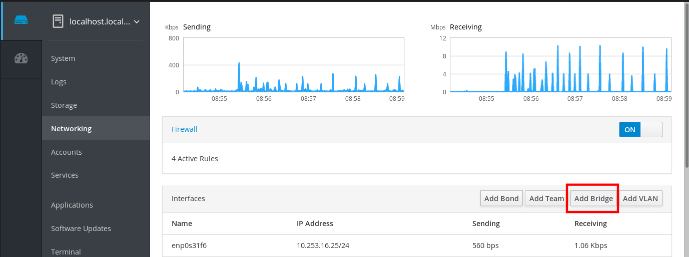
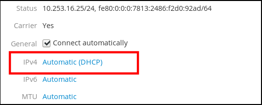
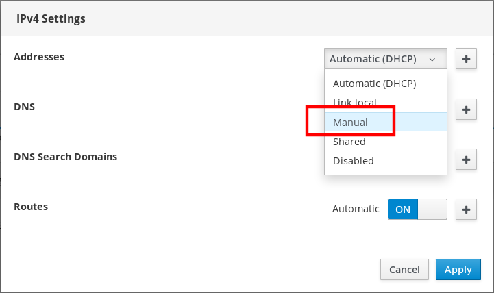
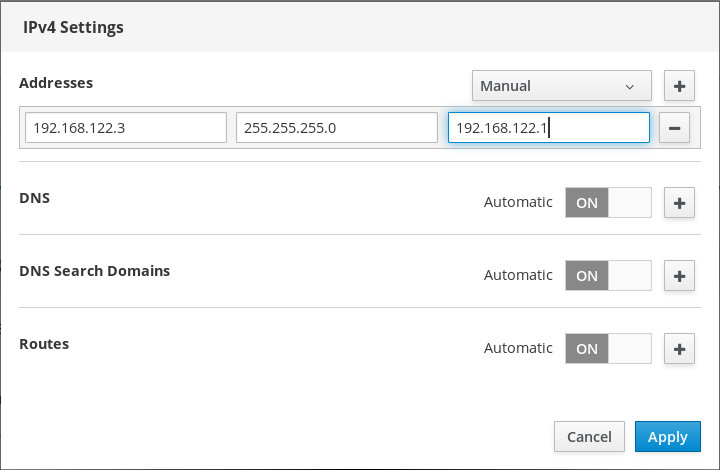
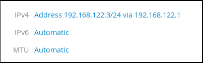
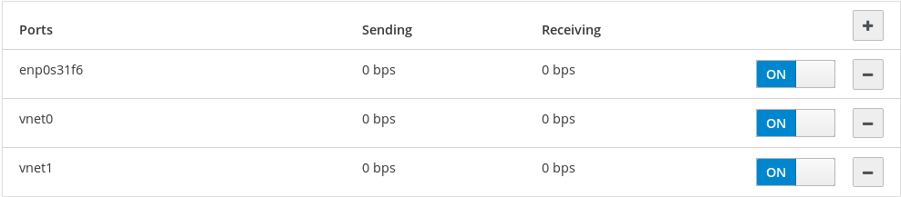
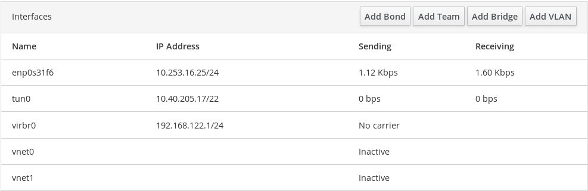
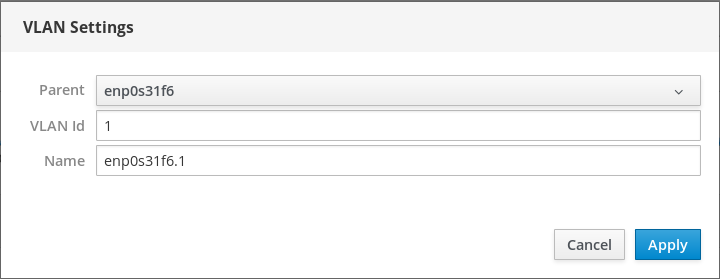
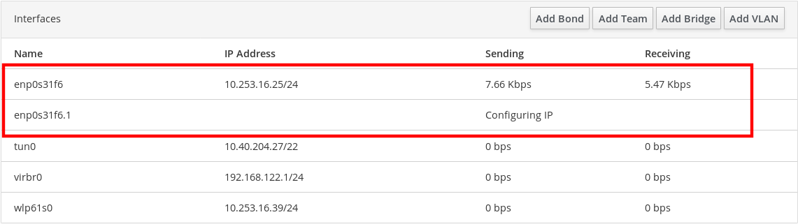

The RHEL 8 web console supports basic network configuration. You can:
- Configure IPv4/IPv6 network settings
- Manage network bridges
- Manage VLANs
- Manage Teams
- Manage Bonds
- Inspect a network log
Note
The RHEL 8 web console is build on top of the NetworkManager service.
For details, see Getting started with managing networking with NetworkManager.
The RHEL 8 web console installed and enabled.
For details about NetworkManager, see Installing the web console.
Network bridges are used to connect multiple interfaces to the one subnet with the same range of IP addresses.
This section describes creating a software bridge on multiple network interfaces using the web console.
Procedure
Log in to the RHEL web console.
For details, see Logging in to the web console.
- Open Networking.
Click the Add Bridge button.

- In the Bridge Settings dialog box, enter a name for the new bridge.
- In the Port field, select interfaces which you want to put to the one subnet.
Optionally, you can select the Spanning Tree protocol (STP) to avoid bridge loops and broadcast radiation.
If you do not have a strong preference, leave the predefined values as they are.

- Click Create.
If the bridge is successfully created, the web console displays the new bridge in the Networking section. Check values in the Sending and Receiving columns in the new bridge row.

If you can see that zero bytes are sent and received through the bridge, the connection does not work correctly and you need to adjust the network settings.
IP address for your system can be assigned from the pool automatically by the DHCP server or you can configure the IP address manually. The IP address will not be influenced by the DHCP server settings.
This section describes configuring static IPv4 addresses of a network bridge using the RHEL web console.
Procedure
Log in to the RHEL web console.
For details, see Logging in to the web console.
- Open the Networking section.
Click the interface where you want to set the static IP address.

In the interface details screen, click the IPv4 configuration.

In the IPv4 Settings dialog box, select Manual in the Addresses drop down list.

- Click Apply.
In the Addresses field, enter the desired IP address, netmask and gateway.

- Click Apply.
At this point, the IP address has been configured and the interface uses the new static IP address.

Network bridges can include multiple interfaces. You can remove them from the bridge. Each removed interface will be automatically changed to the standalone interface.
This section describes removing a network interface from a software bridge created in the RHEL 8 system.
Prerequisites
- Having a bridge with multiple interfaces in your system.
Procedure
Log in to the RHEL web console.
For details, see Logging in to the web console.
- Open Networking.
Click the bridge you want to configure.
In the bridge settings screen, scroll down to the table of ports (interfaces).

- Select the interface and click the - icon.
The RHEL 8 web console removes the interface from the bridge and you can see it back in the Networking section as standalone interface.
You can delete a software network bridge in the RHEL web console. All network interfaces included in the bridge will be changed automatically to standalone interfaces.
Prerequisites
- Having a bridge in your system.
Procedure
Log in to the RHEL web console.
For details, see Logging in to the web console.
- Open the Networking section.
Click the bridge you want to configure.
In the bridge settings screen, scroll down to the table of ports.
- Click Delete.
At this stage, go back to Networking and verify that all the network interfaces are displayed on the Interfaces tab. Interfaces which were part of the bridge can be inactive now. Therefore, you may need to activate them and set network parameters manually.

VLANs (Virtual LANs) are virtual networks created on a single physical Ethernet interface.
Each VLAN is defined by an ID which represents a unique positive integer and works as a standalone interface.
The following procedure describes creating VLANs in the RHEL web console.
Prerequisites
- Having a network interface in your system.
Procedure
Log in to the RHEL web console.
For details, see Logging in to the web console.
- Open Networking.
Click Add VLAN button.

- In the VLAN Settings dialog box, select the physical interface for which you want to create a VLAN.
- Enter the VLAN Id or just use the predefined number.
In the Name field, you can see a predefined name consisted of the parent interface and VLAN Id. If it is not necessary, leave the name as it is.

- Click Apply.
The new VLAN has been created and you need to click at the VLAN and configure the network settings.
